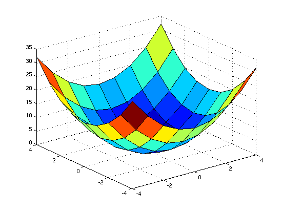
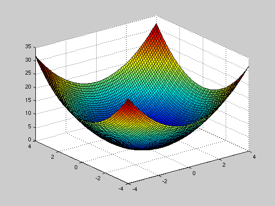
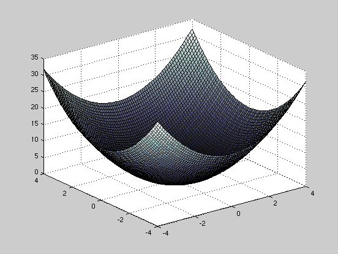
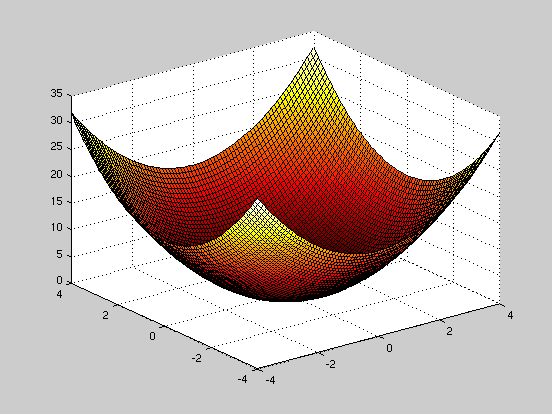
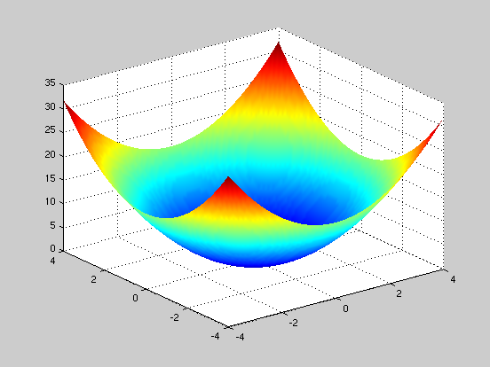
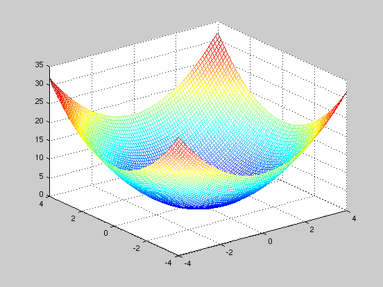
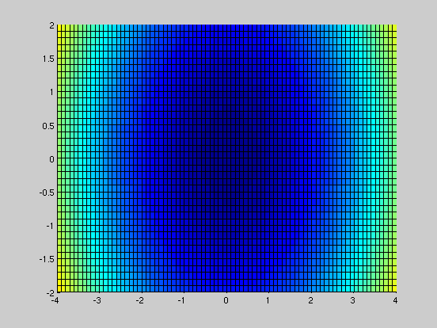

How to plot Surface Plots
JTK 2010.5.3
Contents
The Function
For our example function, we'll be plotting z = x^2 + y^2. This is essentially a two dimensional parabola.
Generating the X,Y Grid
The first thing to do is to generate an X,Y grid for our plot. Think of this grid as the equivalent of the latitude/longitude on Earth - and that we'll be later be plotting something (say topographic elevation) for each point on this grid.
x = -4:1:4; % The range of x values. y = -4:1:4; % The range of y values. [X,Y] = meshgrid (x,y); % This generates the actual grid of x and y values.
Generating the Z Data
To generate the actual Z data, all we need to do is create a function relating "X" and "Y" (the variables from the meshgrid --- not the ranges, 'x' and 'y').
Z=Y.^2+X.^2; % The function we're plotting. % Remember to use the correct vector notation for all operations (such as % using the '.^' operator to do piecewise powers).
Generating the Surface Plot
Next, all we need to do is to generate a surface plot!
figure(1); % Generating a new window to plot in. surf(X,Y,Z) % The surface plotting function.
Improving the Resolution of the Surface Plot
To increase the resolution of the surface plot, all we need to do is increase the number of x and y values plotted:
figure(2); % Generating a new window to plot in. x1 = -4:.1:4; % The range of x values. y1 = -4:.1:4; % The range of y values. [X1,Y1] = meshgrid (x1,y1); % This generates the actual grid of x and y values. Z1=Y1.^2+X1.^2; % The function we're plotting. surf(X1,Y1,Z1) % The surface plotting function.
(PRO TIP) Changing the Surface Plot Color
%There are a wide array of different colormaps that you can select from, %just by examining the help file on "colormaps." Below are two examples. figure(3); surf(X1,Y1,Z1); colormap(bone) % Black/white colormap. figure(4); surf(X1,Y1,Z1); colormap(hot) % Red/Yellow colormap. 
(PRO TIP) Changing The "Edge" Properties
The "Edges" is the black mesh grid that overlays the 3D surface plot. You can easily change the color (or remove this mesh) by adding a "EdgeColor" qualifier in the "Surf" command prompt.
figure(5); surf(X1,Y1,Z1,'EdgeColor','none') shading interp % This smooths out the colormap. % Likewise, you can select to have JUST the edges by using the "mesh" % plotting function rather than the "surf" function: figure(6); mesh(X1,Y1,Z1); % Plotting a mesh plot. 
(PRO TIP) Changing the Plot Axes
To plot custom axes, use the "axis" function:
figure(7); hold on axis([-4 4 -2 2 -5 30]) surf(X1,Y1,Z1) hold off % The axis function is extremely useful, and allows you to do a variety of % things. To make the scaling of each axis equal, we again use the axis % function: figure(8) hold on axis([-4 4 -2 2 -5 30]) axis equal surf(X1,Y1,Z1,'EdgeColor','none') hold off % To rotate the figure, you can simply use the "rotate3d" function to make % the plots interactive. Once activated, you can then click and drag to % rotate the plot. rotate3d on